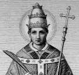

St. Alexander
St. Irenaeus of Lyons, writing in the latter quarter of the second century, reckons him as the fifth pope in succession from the Apostles, though he says nothing of his martyrdom.
His pontificate is variously dated by critics, e.g. 106-115 (Duchesne) or 109-116 (Lightfoot). In Christian antiquity he was credited with a pontificate of about ten years (Eusebius, Church History IV.1) and there is no reason to doubt that he was on the "catalogue of bishops" drawn up at Rome by Hegesippus (Eusebius, IV, xxii, 3) before the death of Pope Eleutherius (c. 189). According to a tradition extant in the Roman Church at the end of the fifth century, and recorded in the Liber Pontificalis he suffered a martyr's death by decapitation on the Via Nomentana in Rome, 3 May.
The same tradition declares him to have been a Roman by birth and to have ruled the Church in the reign of Trajan (98-117). It likewise attributes to him, but scarcely with accuracy, the insertion in the canon of the Qui Pridie, or words commemorative of the institution of the Eucharist, such being certainly primitive and original in the Mass. He is also said to have introduced the use of blessing water mixed with salt for the purification of Christian homes from evil influences (constituit aquam sparsionis cum sale benedici in habitaculis hominum). Duchesne (Lib. Pont., I, 127) calls attention to the persistence of this early Roman custom by way of a blessing in the Gelasian Sacramentary that recalls very forcibly the actual Asperges prayer at the beginning of Mass.
In 1855, a semi-subterranean cemetery of the holy martyrs Sts. Alexander, Eventulus, and Theodulus was discovered near Rome, at the spot where the above mentioned tradition declares the Pope to have been martyred. According to some archaeologists, this Alexander is identical with the Pope, and this ancient and important tomb marks the actual site of the Pope's martyrdom. Duchesne, however (op. cit., I, xci-ii) denies the identity of the martyr and the pope, while admitting that the confusion of both personages is of ancient date, probably anterior to the beginning of the sixth century when the Liber Pontificalis was first compiled [Dufourcq, Gesta Martyrum Romains (Paris, 1900), 210-211].
The difficulties raised in recent times by Richard Lipsius (Chronologie der römischen Bischofe, Kiel, 1869) and Adolph Harnack (Die Zeit des Ignatius u. die Chronologie der antiochenischen Bischofe, 1878) concerning the earliest successors of St. Peter are ably discussed and answered by F.S. (Cardinal Francesco Segna) in his "De successione priorum Romanorum Pontificum" (Rome 1897); with moderation and learning by Bishop Lightfoot, in his "Apostolic Fathers: St. Clement" (London, 1890) I, 201-345- especially by Duchesne in the introduction to his edition of the "Liber Pontificalis" (Paris, 1886) I, i-xlviii and lxviii-lxxiii. The letters ascribed to Alexander I by Pseudo-Isidore may be seen in P.G., V, 1057 sq., and in Hinschius, "Decretales Pseudo-Isidorianae" (Leipzig, 1863) 94-105. His remains are said to have been transferred to Freising in Bavaria in 834 (Dummler, Poetae Latini Aevi Carolini, Berlin, 1884, II, 120). His so-called "Acts" are not genuine, and were compiled at a much later date (Tillemont, Mem. II, 590 sqq; Dufourcq, op. cit., 210-211).
APA citation. Shahan, T. (1907). Pope St. Alexander I. In The Catholic Encyclopedia. New York: Robert Appleton Company. Retrieved April 26, 2010 from New Advent: http://www.newadvent.org/cathen/01285c.htm